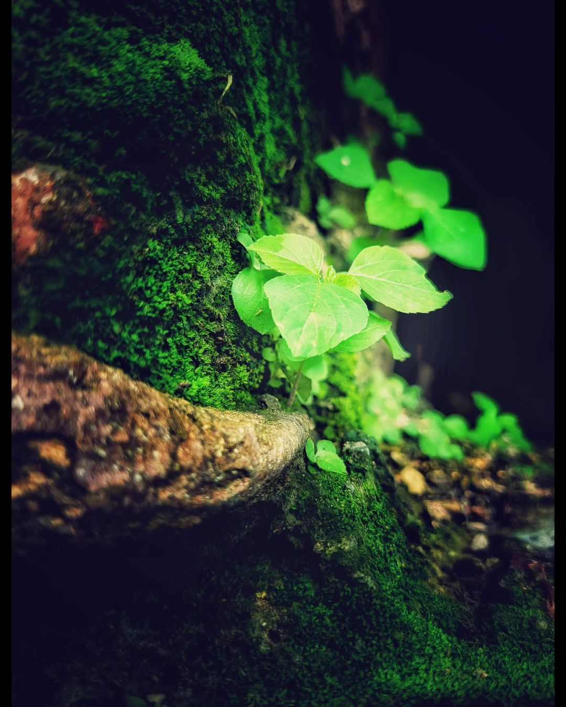

A glimpse into my diverse world, from conceptual art to nature's intricate details. Each image tells its own story.
Hey, I was probably on one of my quiet walks, perhaps around a local park in Bareilly, when this blue flower just *glowed*. It felt like finding a piece of alien beauty right here on Earth. Just had to capture that luminous, delicate strength.
Hey, I was out somewhere peaceful, maybe near a lake or river close to Bareilly, on an early morning in spring. This golden light hit just right, feeling like the world was taking a deep, calm breath. That's the feeling I live for – those untouched, quiet moments.
Hey, I found this dragonfly probably in a garden or by some tall grass on a warm afternoon. It's amazing how much detail you find when you slow down and really look. This little guy was perfectly still, letting me capture its delicate wings and ancient eyes.
Ready to collaborate or just want to connect?
Phone: +91 9027555136
Email: sharmaanshul0244@gmail.com
Instagram: @cx_anshul
Hi, I'm Anshul Sharma, an 18-year-old photographer from Bareilly, India, with a deep love for capturing the world's hidden beauty. My journey into photography is driven by a desire to explore, learn, and live every moment to its fullest. While I aspire to build a stable life, my heart truly beats for the open road – the thrill of camping alone in the mountains, discovering untold stories through my lens, and experiencing the quiet magic of independent travel. Join me as I explore the subtle details and profound moods of life, one click at a time.